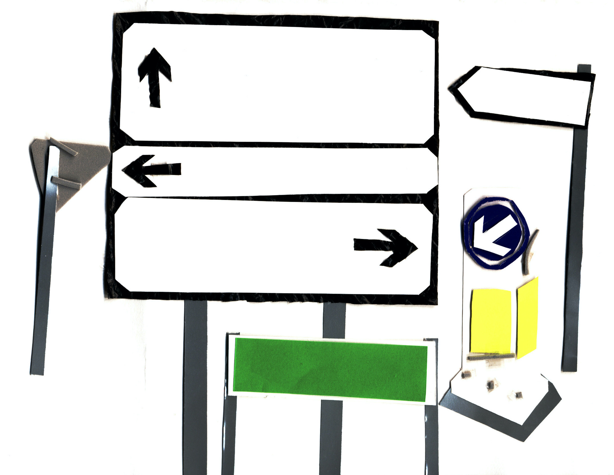

STRAIGHT LEFT RIGHTThe Irish government continues to uphold housing systems shaped by British colonial rule. Landlordism, private property and evictions protect wealth and ownership while leaving many people without secure access to housing. Rather than dismantling these unequal systems, the government continues to reproduce them.